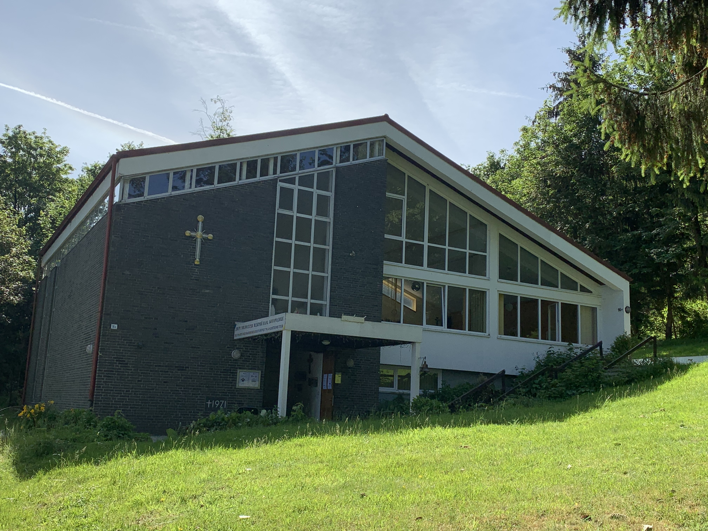
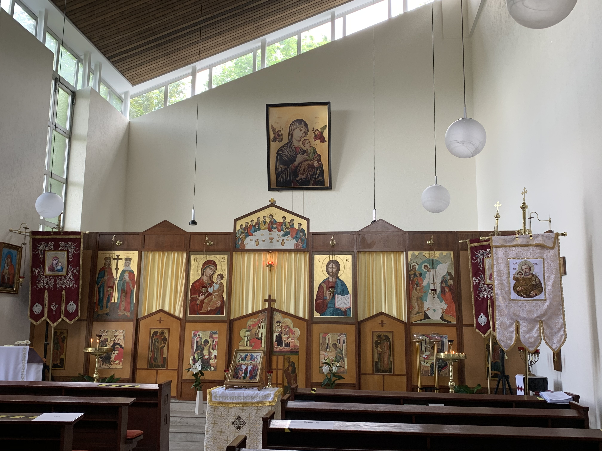
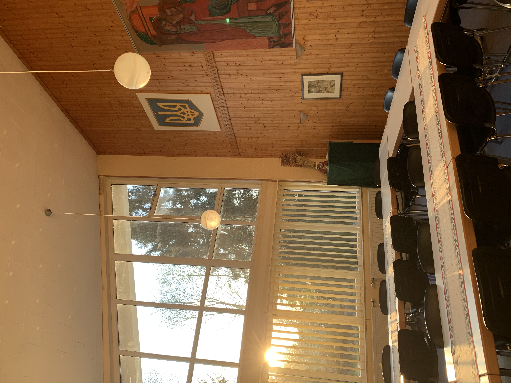

Über uns
  Willkommen auf der Website der Ukrainischen Kirchengemeinde in Bielefeld. Es finden wöchentlich die heilige Liturgie auf ukrainisch statt. Auch Gottesdienste zu besonderen Anlässe wie Taufen oder Hochzeiten können bei uns durchgeführt werden. Dies ist sowohl auf ukrainisch als auch auf deutsch möglich. (Weitere Infos unter Gottesdienste & Gemeinde)
Möchten Sie einen Termin für Ihren persönlchen Gottesdienst vereinbaren? Setzen Sie sich unter Kontakt mit uns in Verbindung
Nach einem Gottesdienst ist das Zusammenfinden in unserem großen Saal zu Kaffee und Kochen möglich. Uns liegt der persönlche Austausch und die gemeinsame Zeit im ukrainischen Umfeld sehr am Herzen.
Besuchen Sie uns gerne! Wir freuen uns auf Sie!